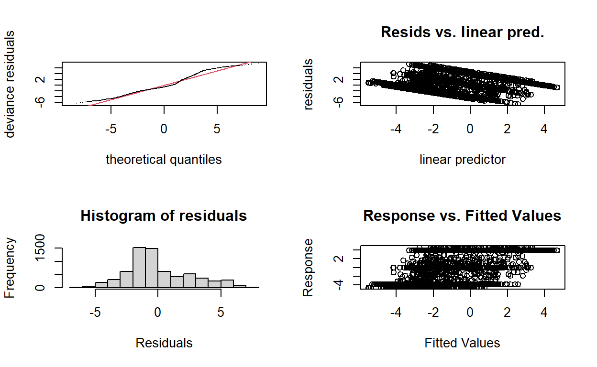
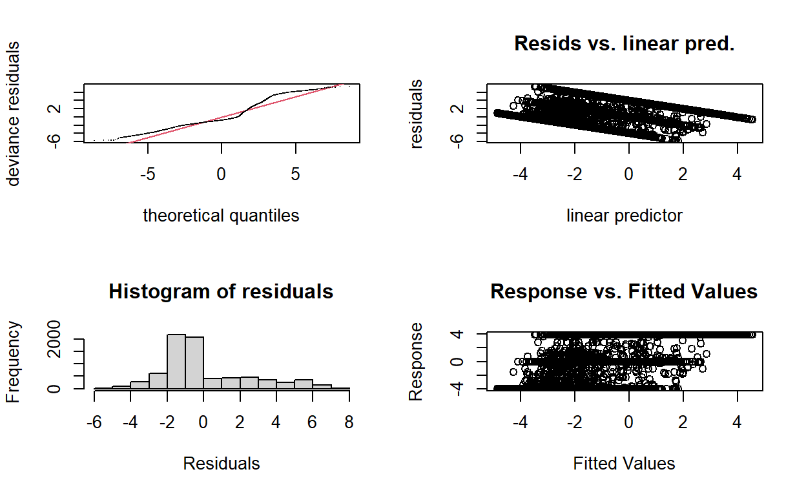
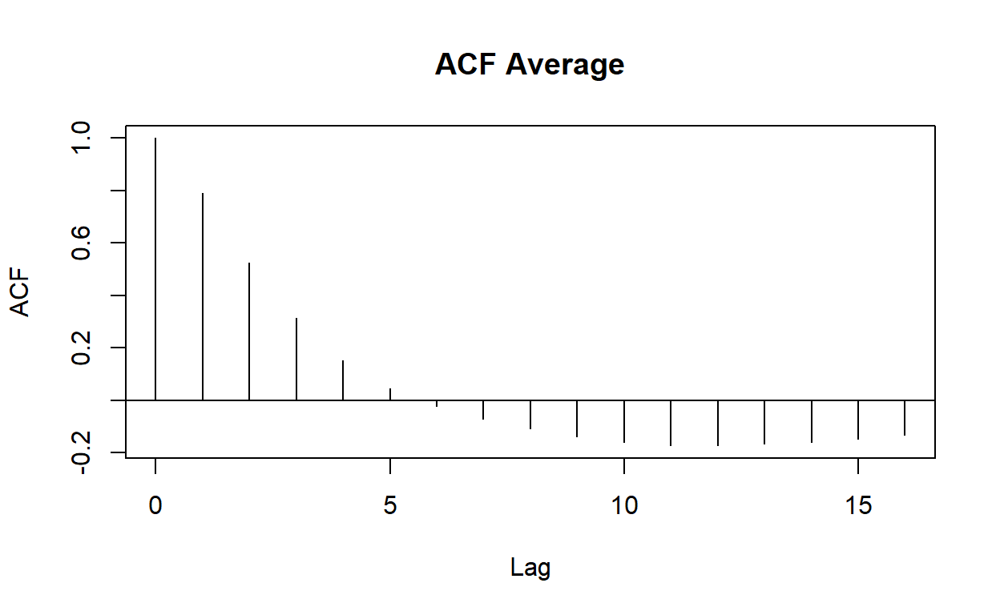
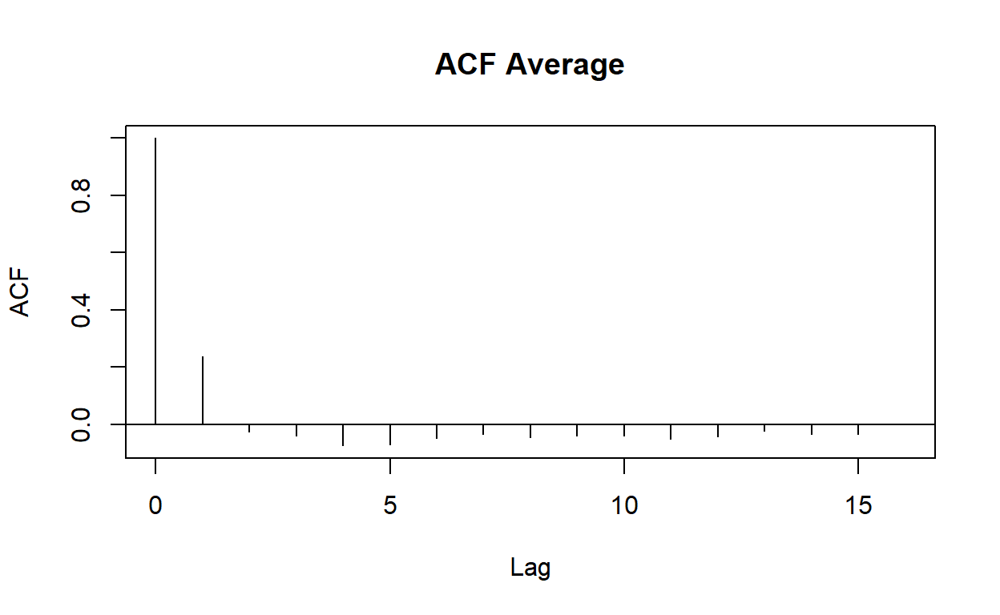
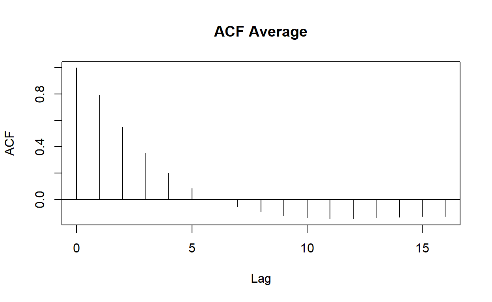
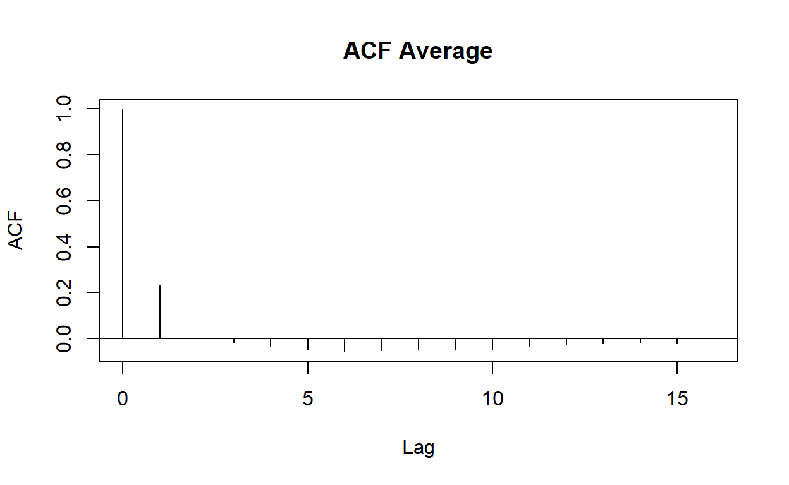
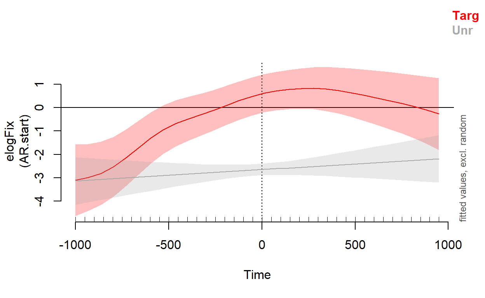
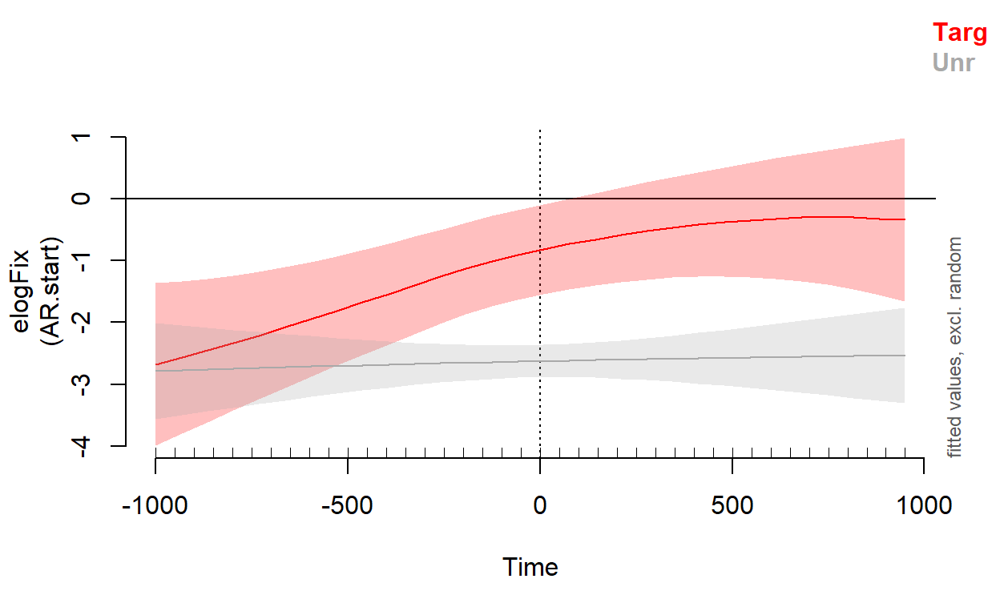
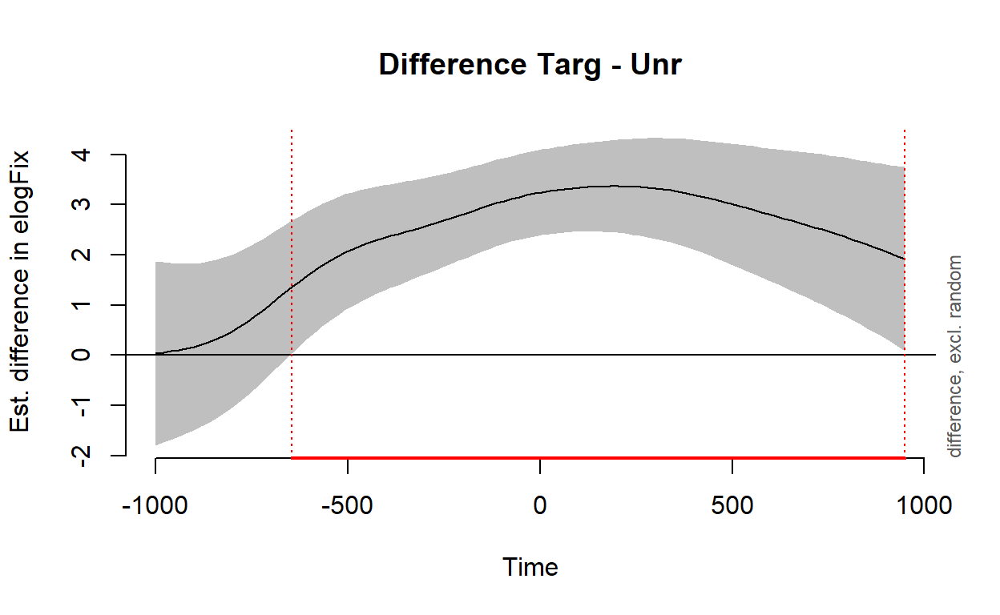
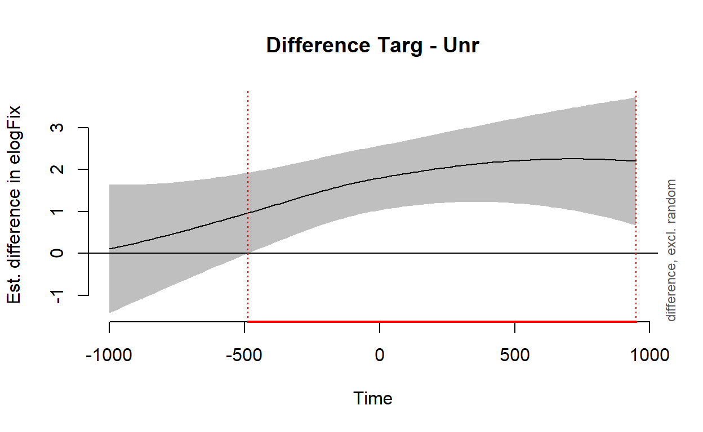

Set-up
Load the following packages. If you haven’t installed them yet, do so
first (e.g., install.packages("learnr")). If you haven’t
installed the stats.VWP package (course materials) yet,
install it using this command
remotes::install_github("aineito/stats.VWP").
require(learnr)
require(Rmisc)
require(tidyverse)
require(ggplot2)
require(mgcv)
require(itsadug)
require(stats.VWP)This is optional: If you run the command below, R will display very
large or very small numbers in a plain format (e.g., 100000 instead of
1e+05, 0.000001 instead of 1e-06).
If you like the latter format, skip the command below.
options(scipen=999)Look at the data
We will use fix.50bin data in the stats.VWP
package for this tutorial.
The data is from Ito, Pickering & Corley (2018, JML). Let’s look at
the summary.
summary(fix.50bin)## Subject Trial Time allSample
## j1 : 640 Min. : 4.00 Min. :-1000.0 Min. :25.00
## j10 : 640 1st Qu.: 9.00 1st Qu.: -512.5 1st Qu.:25.00
## j11 : 640 Median :18.00 Median : -25.0 Median :25.00
## j12 : 640 Mean :18.37 Mean : -25.0 Mean :25.98
## j15 : 640 3rd Qu.:25.00 3rd Qu.: 462.5 3rd Qu.:25.00
## j16 : 640 Max. :34.00 Max. : 950.0 Max. :50.00
## (Other):24840
## Count BlinkCount OffScreenCount FixP
## Min. : 0.00 Min. : 0.000 Min. : 0.0000 Min. :0.0000
## 1st Qu.: 0.00 1st Qu.: 0.000 1st Qu.: 0.0000 1st Qu.:0.0000
## Median : 0.00 Median : 0.000 Median : 0.0000 Median :0.0000
## Mean : 5.32 Mean : 1.344 Mean : 0.2707 Mean :0.2082
## 3rd Qu.: 0.00 3rd Qu.: 0.000 3rd Qu.: 0.0000 3rd Qu.:0.0000
## Max. :50.00 Max. :50.000 Max. :50.0000 Max. :1.0000
##
## Condition Item Lang
## Targ:7160 1 : 1920 L1:13440
## Eng :7120 3 : 1920 L2:15240
## Jap :7200 4 : 1920
## Unr :7200 5 : 1920
## 6 : 1920
## 7 : 1920
## (Other):17160This data set contains the following data.
| Column | Description |
|---|---|
| Subject | Subject ID |
| Trial | Trial number |
| Time | Time relative to the target word onset (Time -1000 contains 50 ms from the time -1000 ms) |
| allSample | The sum of all samples in the corresponding time bin |
| Count | Right-eye sample count on the critical object |
| BlinkCount | The total number of right-eye samples that were in a blink event |
| OffScreenCount | The total number of right-eye samples that fall outside of the display boundary (off screen) |
| FixP | Fixation proportion |
| Condition | Condition (Targ=target, Eng=English competitor, Jap=Japanese competitor, Unr=unrelated) |
| Item | Item ID |
| Lang | Language group (L1=native English speakers, L2=native Japanese, non-native English speakers) |
You can also see the help page to get the details of the variables.
?fix.50binWe will use the target and unrelated conditions. We will drop the rest of the conditions.
fix.50bin = fix.50bin %>% filter(Condition %in% c('Targ','Unr')) %>% droplevels()We will use the empirical logit elogFix (cf. Barr, 2008,
JML) as a dependent variable.
The formula to compute the empirical logit is:
log( (Y+.5) / (N-Y+.5) ) where Y is the total
number of samples that fall in the critical interest area, and
N is the total number of samples for the current bin.
For this data, we will exclude blink samples and off-screen samples
(i.e., N = allSample - BlinkCount - OffScreenCount).
We will also mark the first time bin for each trial. We create a new
column Is_start and set the value to TRUE for the first
time bin.
fix.50bin = fix.50bin %>% mutate(elogFix = log((Count+.5)/(allSample-BlinkCount-OffScreenCount-Count+.5)), Is_start = (Time == min(Time))) Let’s plot a time-course graph with ‘FixP’ on the y-axis.
fix.50bin.summary = summarySE(fix.50bin, measurevar='FixP', groupvars=c('Lang','Condition','Time'))ggplot() +
facet_wrap(~Lang) + theme_bw() +
geom_line(data=fix.50bin.summary,aes(x=Time, y=FixP, group=Condition, colour=Condition, lty=Condition), lwd=1.5) +
geom_ribbon(data=fix.50bin.summary,aes(x=Time, ymin=FixP-se, ymax=FixP+se, color=Condition, fill=Condition), lwd=.2, alpha=.3, lty="dashed", show.legend=F) +
labs(y="Fixation Proportion", x="Time relative to the target word onset (ms)") +
scale_x_continuous(limits=c(-1000,950),expand=c(0,0),breaks=seq(-750, 750, 250)) +
scale_color_manual('Condition', values=c("red","darkgrey")) +
scale_fill_manual('Condition', values=c("red","darkgrey")) +
scale_linetype_manual('Condition', values=c("solid","dotted")) +
theme(text=element_text(size=20), legend.key.height=unit(.3,"in"), legend.key.width=unit(.6,"in")) ## Warning: Using `size` aesthetic for lines was deprecated in ggplot2 3.4.0.
## ℹ Please use `linewidth` instead.
GAMM
Here we will run an analysis testing a difference between the target and unrelated conditions for each group.
Subset the data:
fix.L1dat = fix.50bin %>% filter(Lang=="L1") %>% droplevels()
fix.L2dat = fix.50bin %>% filter(Lang=="L2") %>% droplevels()Code the categorical variable (Condition):
contrasts(fix.L1dat$Condition) = contr.sum(2)
contrasts(fix.L2dat$Condition) = contr.sum(2)Fit the models
To model non-linear curves, we will use a smooth function
s(). The model below includes a random smooth (which
adjusts the trend of a numeric predictor (Time) in a non-linear way;
“fs” = factor smooth) for Time by Condition, smooth interactions for
Time by Subject and Time by Item. by=Condition is used to
model potentially different trends over time for different conditions.
The random smooths include random intercepts and random slope
effects.
We will run the model below first to determine an appropriate value for the AR1 correlation parameter (the parameter to account for autocorrelated residuals).
gamm.base.L1 = bam(elogFix ~ Condition + s(Time, by=Condition) + s(Time, Subject, by=Condition, bs="fs", m=1) + s(Time, Item, by=Condition, bs="fs", m=1), data = fix.L1dat)## Warning in gam.side(sm, X, tol = .Machine$double.eps^0.5): model has repeated 1-
## d smooths of same variable.gamm.base.L2 = bam(elogFix ~ Condition + s(Time, by=Condition) + s(Time, Subject, by=Condition, bs="fs", m=1) + s(Time, Item, by=Condition, bs="fs", m=1), data = fix.L2dat)## Warning in gam.side(sm, X, tol = .Machine$double.eps^0.5): model has repeated 1-
## d smooths of same variable.The warning “model has repeated 1-d smooths of same variable” tells us that we have smooths over time both in random effects and fixed effects. That is fine, so we can ignore this warning.
summary(gamm.base.L1)##
## Family: gaussian
## Link function: identity
##
## Formula:
## elogFix ~ Condition + s(Time, by = Condition) + s(Time, Subject,
## by = Condition, bs = "fs", m = 1) + s(Time, Item, by = Condition,
## bs = "fs", m = 1)
##
## Parametric coefficients:
## Estimate Std. Error t value Pr(>|t|)
## (Intercept) -1.5090 0.1558 -9.685 < 0.0000000000000002 ***
## Condition1 1.1435 0.1558 7.339 0.000000000000242 ***
## ---
## Signif. codes: 0 '***' 0.001 '**' 0.01 '*' 0.05 '.' 0.1 ' ' 1
##
## Approximate significance of smooth terms:
## edf Ref.df F p-value
## s(Time):ConditionTarg 3.693 4.017 3.732 0.00491 **
## s(Time):ConditionUnr 1.000 1.000 0.647 0.42133
## s(Time,Subject):ConditionTarg 151.812 215.000 8.700 < 0.0000000000000002 ***
## s(Time,Subject):ConditionUnr 138.630 215.000 3.841 < 0.0000000000000002 ***
## s(Time,Item):ConditionTarg 85.878 125.000 6.310 < 0.0000000000000002 ***
## s(Time,Item):ConditionUnr 80.544 125.000 3.358 < 0.0000000000000002 ***
## ---
## Signif. codes: 0 '***' 0.001 '**' 0.01 '*' 0.05 '.' 0.1 ' ' 1
##
## R-sq.(adj) = 0.509 Deviance explained = 54.3%
## fREML = 16110 Scale est. = 5.9727 n = 6720summary(gamm.base.L2)##
## Family: gaussian
## Link function: identity
##
## Formula:
## elogFix ~ Condition + s(Time, by = Condition) + s(Time, Subject,
## by = Condition, bs = "fs", m = 1) + s(Time, Item, by = Condition,
## bs = "fs", m = 1)
##
## Parametric coefficients:
## Estimate Std. Error t value Pr(>|t|)
## (Intercept) -1.8555 0.1889 -9.824 < 0.0000000000000002 ***
## Condition1 0.7566 0.1889 4.006 0.0000624 ***
## ---
## Signif. codes: 0 '***' 0.001 '**' 0.01 '*' 0.05 '.' 0.1 ' ' 1
##
## Approximate significance of smooth terms:
## edf Ref.df F p-value
## s(Time):ConditionTarg 2.117 2.248 2.473 0.0764 .
## s(Time):ConditionUnr 1.000 1.000 0.076 0.7832
## s(Time,Subject):ConditionTarg 149.439 215.000 11.739 <0.0000000000000002 ***
## s(Time,Subject):ConditionUnr 137.495 215.000 3.606 <0.0000000000000002 ***
## s(Time,Item):ConditionTarg 100.157 143.000 6.163 <0.0000000000000002 ***
## s(Time,Item):ConditionUnr 89.635 143.000 3.165 <0.0000000000000002 ***
## ---
## Signif. codes: 0 '***' 0.001 '**' 0.01 '*' 0.05 '.' 0.1 ' ' 1
##
## R-sq.(adj) = 0.462 Deviance explained = 49.6%
## fREML = 17931 Scale est. = 5.4782 n = 7640( rho.L1 = start_value_rho(gamm.base.L1) )## [1] 0.8329126( rho.L2 = start_value_rho(gamm.base.L2) )## [1] 0.8357944The above function gives us a value we can use for the AR1 parameter.
We will add these values to the models below
(rho=VALUE).
gamm.main.L1 = bam(elogFix ~ Condition + s(Time, by=Condition) + s(Time, Subject, by=Condition, bs="fs", m=1) + s(Time, Item, by=Condition, bs="fs", m=1), data=fix.L1dat, rho=rho.L1, AR.start=Is_start)## Warning in gam.side(sm, X, tol = .Machine$double.eps^0.5): model has repeated 1-
## d smooths of same variable.gamm.main.L2 = bam(elogFix ~ Condition + s(Time, by=Condition) + s(Time, Subject, by=Condition, bs="fs", m=1) + s(Time, Item, by=Condition, bs="fs", m=1), data=fix.L2dat, rho=rho.L2, AR.start=Is_start)## Warning in gam.side(sm, X, tol = .Machine$double.eps^0.5): model has repeated 1-
## d smooths of same variable.Visualise the residuals
We will plot the residuals of the fitted model.
gam.check(gamm.main.L1) 
##
## Method: fREML Optimizer: perf newton
## full convergence after 10 iterations.
## Gradient range [-0.00005543475,0.00001977508]
## (score 11645.68 & scale 5.494852).
## Hessian positive definite, eigenvalue range [0.00001246609,3359.697].
## Model rank = 704 / 704
##
## Basis dimension (k) checking results. Low p-value (k-index<1) may
## indicate that k is too low, especially if edf is close to k'.
##
## k' edf k-index p-value
## s(Time):ConditionTarg 9.0 5.2 1.02 0.99
## s(Time):ConditionUnr 9.0 1.0 1.02 0.97
## s(Time,Subject):ConditionTarg 216.0 117.0 1.02 0.95
## s(Time,Subject):ConditionUnr 216.0 77.1 1.02 0.95
## s(Time,Item):ConditionTarg 126.0 64.3 1.02 0.95
## s(Time,Item):ConditionUnr 126.0 51.2 1.02 0.94gam.check(gamm.main.L2) 
##
## Method: fREML Optimizer: perf newton
## full convergence after 10 iterations.
## Gradient range [-0.000005764079,0.00003195963]
## (score 12816.83 & scale 5.062117).
## Hessian positive definite, eigenvalue range [0.003514062,3819.36].
## Model rank = 740 / 740
##
## Basis dimension (k) checking results. Low p-value (k-index<1) may
## indicate that k is too low, especially if edf is close to k'.
##
## k' edf k-index p-value
## s(Time):ConditionTarg 9.00 2.49 0.98 0.12
## s(Time):ConditionUnr 9.00 1.11 0.98 0.12
## s(Time,Subject):ConditionTarg 216.00 115.52 0.98 0.14
## s(Time,Subject):ConditionUnr 216.00 70.78 0.98 0.14
## s(Time,Item):ConditionTarg 144.00 72.43 0.98 0.07 .
## s(Time,Item):ConditionUnr 144.00 44.69 0.98 0.10
## ---
## Signif. codes: 0 '***' 0.001 '**' 0.01 '*' 0.05 '.' 0.1 ' ' 1We can check if accounting for autocorrelation improves the models. The value on the y-axis of the second line (from the left) indicates the amount of autocorrelation at lag 1.
L1 group
acf_resid(gamm.base.L1, split_pred=c('Subject', 'Item')) # autocorrelation is not taken into account
acf_resid(gamm.main.L1, split_pred=c('Subject', 'Item')) # autocorrelation is taken into account
L2 group
acf_resid(gamm.base.L2, split_pred=c('Subject', 'Item')) # autocorrelation is not taken into account
acf_resid(gamm.main.L2, split_pred=c('Subject', 'Item')) # autocorrelation is taken into account
Model comparison
compareML(gamm.base.L1, gamm.main.L1)## gamm.base.L1: elogFix ~ Condition + s(Time, by = Condition) + s(Time, Subject,
## by = Condition, bs = "fs", m = 1) + s(Time, Item, by = Condition,
## bs = "fs", m = 1)
##
## gamm.main.L1: elogFix ~ Condition + s(Time, by = Condition) + s(Time, Subject,
## by = Condition, bs = "fs", m = 1) + s(Time, Item, by = Condition,
## bs = "fs", m = 1)
##
## Model gamm.main.L1 preferred: lower fREML score (4463.824), and equal df (0.000).
## -----
## Model Score Edf Difference Df
## 1 gamm.base.L1 16109.50 14
## 2 gamm.main.L1 11645.68 14 -4463.824 0.000
##
## AIC difference: 8437.60, model gamm.main.L1 has lower AIC.compareML(gamm.base.L2, gamm.main.L2)## gamm.base.L2: elogFix ~ Condition + s(Time, by = Condition) + s(Time, Subject,
## by = Condition, bs = "fs", m = 1) + s(Time, Item, by = Condition,
## bs = "fs", m = 1)
##
## gamm.main.L2: elogFix ~ Condition + s(Time, by = Condition) + s(Time, Subject,
## by = Condition, bs = "fs", m = 1) + s(Time, Item, by = Condition,
## bs = "fs", m = 1)
##
## Model gamm.main.L2 preferred: lower fREML score (5114.014), and equal df (0.000).
## -----
## Model Score Edf Difference Df
## 1 gamm.base.L2 17930.84 14
## 2 gamm.main.L2 12816.83 14 -5114.014 0.000
##
## AIC difference: 9680.68, model gamm.main.L2 has lower AIC.For both groups, the model with the autocorrelation parameter was better.
Let’s get the summaries of the main models.
summary(gamm.main.L1)##
## Family: gaussian
## Link function: identity
##
## Formula:
## elogFix ~ Condition + s(Time, by = Condition) + s(Time, Subject,
## by = Condition, bs = "fs", m = 1) + s(Time, Item, by = Condition,
## bs = "fs", m = 1)
##
## Parametric coefficients:
## Estimate Std. Error t value Pr(>|t|)
## (Intercept) -1.5105 0.1356 -11.140 <0.0000000000000002 ***
## Condition1 1.1495 0.1356 8.478 <0.0000000000000002 ***
## ---
## Signif. codes: 0 '***' 0.001 '**' 0.01 '*' 0.05 '.' 0.1 ' ' 1
##
## Approximate significance of smooth terms:
## edf Ref.df F p-value
## s(Time):ConditionTarg 5.204 5.861 3.290 0.00348 **
## s(Time):ConditionUnr 1.000 1.000 0.904 0.34178
## s(Time,Subject):ConditionTarg 116.979 215.000 1.461 < 0.0000000000000002 ***
## s(Time,Subject):ConditionUnr 77.077 215.000 0.632 < 0.0000000000000002 ***
## s(Time,Item):ConditionTarg 64.332 125.000 1.324 < 0.0000000000000002 ***
## s(Time,Item):ConditionUnr 51.183 125.000 0.771 < 0.0000000000000002 ***
## ---
## Signif. codes: 0 '***' 0.001 '**' 0.01 '*' 0.05 '.' 0.1 ' ' 1
##
## R-sq.(adj) = 0.452 Deviance explained = 47.8%
## fREML = 11646 Scale est. = 5.4949 n = 6720summary(gamm.main.L2)##
## Family: gaussian
## Link function: identity
##
## Formula:
## elogFix ~ Condition + s(Time, by = Condition) + s(Time, Subject,
## by = Condition, bs = "fs", m = 1) + s(Time, Item, by = Condition,
## bs = "fs", m = 1)
##
## Parametric coefficients:
## Estimate Std. Error t value Pr(>|t|)
## (Intercept) -1.8793 0.1678 -11.198 < 0.0000000000000002 ***
## Condition1 0.7602 0.1678 4.529 0.00000601 ***
## ---
## Signif. codes: 0 '***' 0.001 '**' 0.01 '*' 0.05 '.' 0.1 ' ' 1
##
## Approximate significance of smooth terms:
## edf Ref.df F p-value
## s(Time):ConditionTarg 2.495 2.824 2.507 0.052930 .
## s(Time):ConditionUnr 1.111 1.157 0.066 0.826363
## s(Time,Subject):ConditionTarg 115.517 215.000 1.672 < 0.0000000000000002 ***
## s(Time,Subject):ConditionUnr 70.778 215.000 0.520 0.00000119 ***
## s(Time,Item):ConditionTarg 72.434 143.000 1.178 < 0.0000000000000002 ***
## s(Time,Item):ConditionUnr 44.689 143.000 0.462 0.000206 ***
## ---
## Signif. codes: 0 '***' 0.001 '**' 0.01 '*' 0.05 '.' 0.1 ' ' 1
##
## R-sq.(adj) = 0.395 Deviance explained = 42%
## fREML = 12817 Scale est. = 5.0621 n = 7640Note: The explained deviance has dropped slightly because the main models are accounting for the autocorrelation and so predicting the observed values slightly less well than the models without the autocorrelation parameter.
Plot results
L1 group
plot_smooth(gamm.main.L1, view="Time", plot_all="Condition", v0=0, col=c('red','darkgrey'))## Summary:
## * Condition : factor; set to the value(s): Targ, Unr.
## * Time : numeric predictor; with 30 values ranging from -1000.000000 to 950.000000.
## * Subject : factor; set to the value(s): p1. (Might be canceled as random effect, check below.)
## * Item : factor; set to the value(s): 1. (Might be canceled as random effect, check below.)
## * NOTE : The following random effects columns are canceled: s(Time,Subject):ConditionTarg,s(Time,Subject):ConditionUnr,s(Time,Item):ConditionTarg,s(Time,Item):ConditionUnr
## 
L2 group
plot_smooth(gamm.main.L2, view="Time", plot_all="Condition", v0=0, col=c('red','darkgrey'))## Summary:
## * Condition : factor; set to the value(s): Targ, Unr.
## * Time : numeric predictor; with 30 values ranging from -1000.000000 to 950.000000.
## * Subject : factor; set to the value(s): j1. (Might be canceled as random effect, check below.)
## * Item : factor; set to the value(s): 2. (Might be canceled as random effect, check below.)
## * NOTE : The following random effects columns are canceled: s(Time,Subject):ConditionTarg,s(Time,Subject):ConditionUnr,s(Time,Item):ConditionTarg,s(Time,Item):ConditionUnr
## 
We can estimate the time when the effect occurred using the codes below.
plot_diff(gamm.main.L1, view="Time", comp=list(Condition=c("Targ", "Unr")))## Summary:
## * Time : numeric predictor; with 100 values ranging from -1000.000000 to 950.000000.
## * Subject : factor; set to the value(s): p1. (Might be canceled as random effect, check below.)
## * Item : factor; set to the value(s): 1. (Might be canceled as random effect, check below.)
## * NOTE : The following random effects columns are canceled: s(Time,Subject):ConditionTarg,s(Time,Subject):ConditionUnr,s(Time,Item):ConditionTarg,s(Time,Item):ConditionUnr
## 
##
## Time window(s) of significant difference(s):
## -645.454545 - 950.000000plot_diff(gamm.main.L2, view="Time", comp=list(Condition=c("Targ", "Unr")))## Summary:
## * Time : numeric predictor; with 100 values ranging from -1000.000000 to 950.000000.
## * Subject : factor; set to the value(s): j1. (Might be canceled as random effect, check below.)
## * Item : factor; set to the value(s): 2. (Might be canceled as random effect, check below.)
## * NOTE : The following random effects columns are canceled: s(Time,Subject):ConditionTarg,s(Time,Subject):ConditionUnr,s(Time,Item):ConditionTarg,s(Time,Item):ConditionUnr
## 
##
## Time window(s) of significant difference(s):
## -487.878788 - 950.000000Exercise
In this tutorial, we compared the target vs. unrelated conditions in the L1 group using the code below. This model included a random smooth (which incorporates both random intercepts and random slopes).
Modify the so that you will have a model testing the same effect but with a different random-effects structure. Build a model that only includes by-subject and by-item random intercepts, and another model that includes by-subject and by-item random slope for Time (but no random intercepts).
Remember, random effects are not specified in the same way as in LME.
Click Hint if you need some hints.
Click Solution to see the solution.
gamm.main.L1 = bam(elogFix ~ Condition + s(Time, by=Condition) + s(Time, Subject, by=Condition, bs="fs", m=1) + s(Time, Item, by=Condition, bs="fs", m=1), data=fix.L1dat, rho=rho.L1, AR.start=Is_start)Hint: s(Time, by=Condition) indicates
you want to model different trends over time for different conditions. A
by-subject random intercept can be specified using
s(Subject, bs="re"), and a by-subject random slope can be
specified using s(Subject, Time, bs="re")
gamm.main.L1.intercept = bam(elogFix ~ Condition + s(Time, by=Condition) + s(Subject, bs="re") + s(Item, bs="re"), data=fix.L1dat, rho=rho.L1, AR.start=Is_start)
gamm.main.L1.slope = bam(elogFix ~ Condition + s(Time, by=Condition) + s(Subject, Time, bs="re") + s(Item, Time, bs="re"), data=fix.L1dat, rho=rho.L1, AR.start=Is_start)Solution
For this exercise, you should have changed the following from the tutorial code:
- add
s(Subject, bs="re") + s(Item, bs="re")to model by-subject and by-item random intercepts, respectively - add
s(Subject, Time, bs="re") + s(Item, Time, bs="re")to model by-subject and by-item random slopes, respectively - keep
s(Time, by=Condition)because you still want to model different trends for different conditions (Time by Condition interaction)